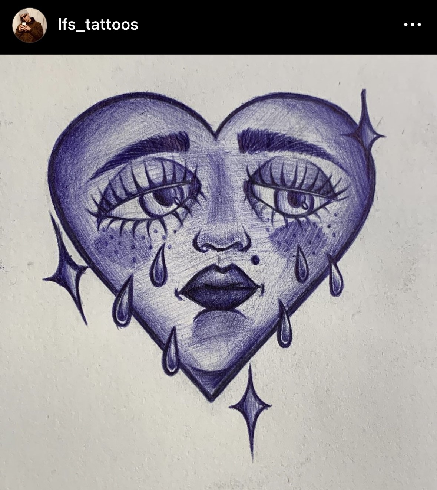

My Art
Some tattoo flashes I've designed and some tattoos I've done in the past.
About
This page is about one of my past careers, but also future hobbies because I plan on getting back to it in the future. The tattoos you see in this page are tattoos that I've done in the past, I started as an apprentice and did a course that took about a year to complete. I always loved the look of tattoos and it's meaning behind them. My parents and almost all family relatives have tattoos and since I was little I always wanted to have a bunch when grown up. The spider tattoo I did on myself when I was practicing line work tattoos, the cherry skulls were done in one of my past coworkers. I did that one for free since you can't charge customers as an apprentice. The pinned hearts drawing was done in the Ipad fully free handed, when I was first learning how to use the app. And last but not least the sad heart, which was done fully freehanded with a blue pen. My styles of tattooing are old-school and neo-traditional. I plan on getting better in the future, as I want to be specialized in those two styles. Thank you for learning about my past tattoo experience.